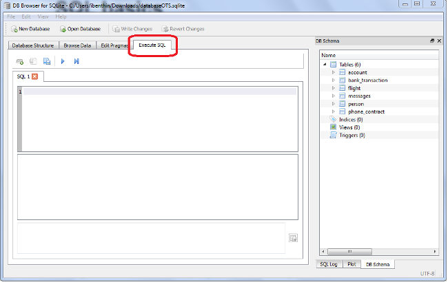

After the completion of this course, you will be able to use an SQL client to obtain data stored in an SQL database. You will learn how to write queries which give you exactly the information you require and to bring them into the form most suitable to answer the given questions. You will also learn how to enter new data and how to edit existing one.
A database is a organized collection of data. SQL, being an acronym for Structured Query Language, denots database language used to access databases. We speak of SQL databases when we mean a database which provides an SQL interface. Such databases are called relational databases as the data is stored in a set of table between which relationships exist. A database system is a computer program which allows to create, access, edit, and manage databases. Popular ones are MySQL, MS-SQL, and Oracle DB.
In this tutorial, we work with the file-based database system SQLite and the corresponding client DB Browser for SQLite. SQLite is simple and quite powerful and allows to store a database in an single file. Besides many other applications it is also used in the android operating system to store application data on phones and tablets. How to install the required software on Linux, MacOS, and Windows is detailed in the provided installation guide.
To perform a SQL query to a database, enter the command in the text field and click on Execute Command. As an alternative to Sqlitebrowser you can use Sqliteman which is a good alternative especially for Debian and Ubuntu Linux users. Please refer to the installation guide for details.
As the focus of this tutorial lies on the retrieval of data from an existing database rather than creating new databases, a file databaseOTS.sqlite is provided which contains all the data required later on in the course. Download this file to some location on your computer. Then you can open it in DB Browser for SQLite by clicking on open database.

Write all sql-Statements in an text editor first. This way it is much easier to reuse statements formulated before. All text in fixed font is code (usually SQL statements). Note that SQL key words such as select or from are not case sensitive. Questions or excercises are written as:
0.) Have you sucesfully installed SQLite?
The answers to the questions (or often an SQL statement which yields the answer) are found here. You are strongly encouraged not only to answer the questions but also to try out all presented commands with some examples of your own.
So, now you can get started to learn the SQL basics.